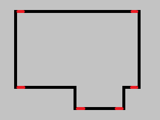
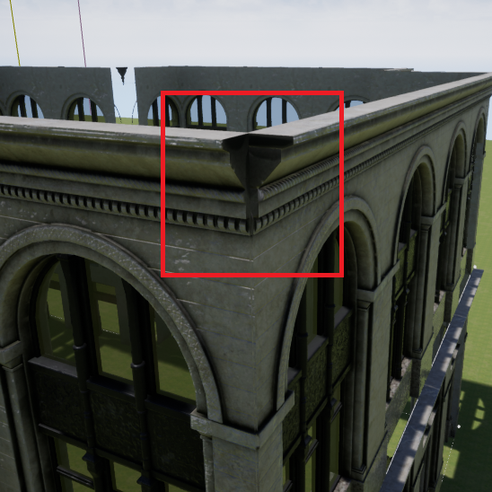
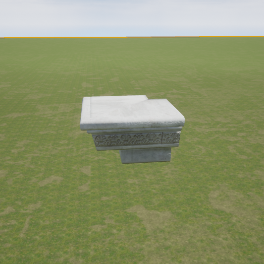

This week I worked on the automatically generating floorplans, cleaning up the code, and preparing for my midterm progress presentation. I also made the decision to remove corners.
I wanted to add corners and corner meshes because some asset pack meshes come with corner pieces. However, they cause a lot of issues for floorplans since walls will not add up correctly if one side has an extrusion (first picture). I initially thought I could deal with it by making sure to add an extrusion to the other side to balance it out, but when I thought about it more and discussed it with my advisor I realized it's better to not have corners altogether. To fix the gaps in the wall caused by extended details I will eventually add an option to add small corner meshes at the edge without allowing room for a wall piece (second and third pictures).
  Next, I worked on generating floorplans for the first level. I used subtractive shape generation, specifically inverting corners, to achieve this. My algorithm generates a square with the provided width and depth and then randomly attempts to invert a corner if there is enough space. When inverting a corner, the width and depth of the piece that is removed are also randomly chosen within reasonable bounds.
Then I modified the algorithm to work for multiple levels. For every level after the first level, the points from the previous level are used an input. The algorithm then attempts to invert each point if there is enough space. The higher the level, the more likely it is that the algorithm will attempt to invert a point but it will be more likely that it will fail because there isn't enough room. I'm mostly happy with the result but I will continue to tweak the algorithm more if I think of ideas to improve it.
I worked on my midterm presentation for the rest of the week.
I will be working on adding doors and windows next week, and possibly adding balconies if I have time.